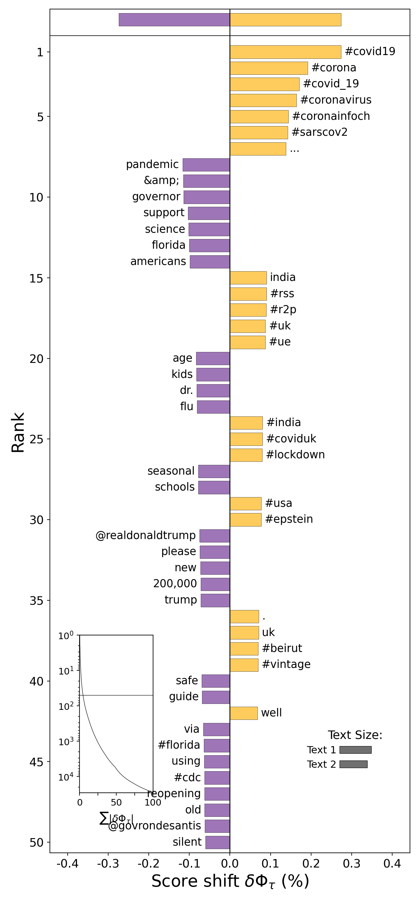
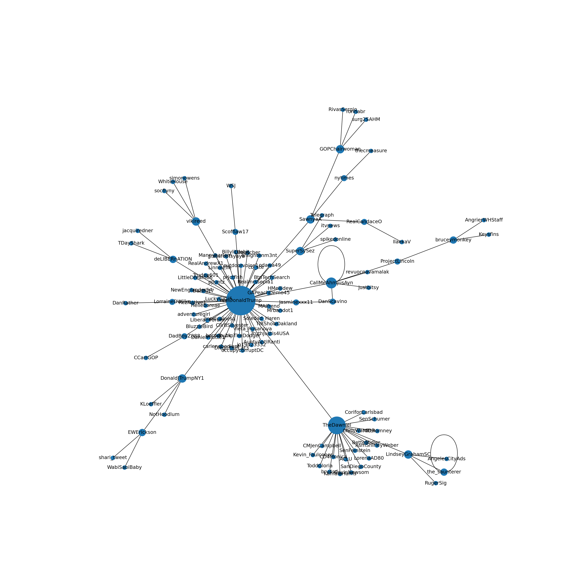

2 Getting started: Fun with data and visualizations
Abstract. This chapter is a lightning tour of some of the cool (and informative) things you can do with R and Python. Starting from a dataset of tweets about COVID-19, we show how you can analyze this data using text analysis, network analysis, and using geographic information. The goal of this chapter is not to teach you all these techniques in detail, rather, each of the examples showcases a possibility and guides you to the chapter where it will be explained in more detail. So don’t worry too much about understanding every line of code, but relax and enjoy the ride!
Keywords. basics of programming, data analysis
Objectives:
- Get an overview of the possibilities of R and Python for data analysis and visualization
- Understand how different aspects of data gathering, cleaning, and analysis work together
- Have fun with data and visualizations!
2.1 Fun With Tweets
The goal of this chapter is to showcase how you can use R or Python to quickly and easily run some impressive analyses of real world data. For this purpose, we will be using a dataset of tweets about the COVID pandemic that is engulfing much of the world at the time this book is written. Of course, tweets are probably only representative for what is said on Twitter, but the data are (semi-)public and rich, containing text, location, and network characteristics. This makes them ideal for exploring the many ways in which we can analyze and visualize information with Python and R.
Example 2.1 shows how you can read this dataset into memory using a single command. Note that this does not retrieve the tweets from Twitter itself, but rather downloads our cached version of the tweets. In Chapter ?sec-chap-scraping we will show how you can download tweets and location data yourself, but to make sure we can get down to business immediately we will start from this cached version.
As you can see, the dataset contains almost 10000 tweets, listing their sender, their location and language, the text, the number of retweets, and whether it was a reply (retweet). You can read the start of the three most retweeted messages, which contain one (political) tweet from India and two seemingly political and factual tweets from the United States.
My first bar plot. Before diving into the textual, network, and geographic data in the dataset, let’s first make a simple visualization of the date on which the tweets were posted. Example 2.2 does this in two steps: first, the number of tweets per hour is counted with an aggregation command. Next, a bar plot is made of this calculated value with some options to make it look relatively clean and professional. If you want to play around with this, you can for example try to plot the number of tweets per language, or create a line plot instead of a bar plot. For more information on visualization, please see Chapter 7. See Chapter 6 for an in-depth explanation of the aggregation command.
Example 2.2 Barplot of tweets over time
tw.index = pd.DatetimeIndex(tw["created_at"])
tw["status_id"].groupby(pd.Grouper(freq="H")).count().plot(kind="bar")
# (note the use of \ to split a long line)
tweets_per_hour = tw %>%
mutate(hour=round_date(created_at, "hour")) %>%
group_by(hour) %>% summarize(n=n())
ggplot(tweets_per_hour, aes(x=hour, y=n)) +
geom_col() + theme_classic() +
xlab("Time") + ylab("# of tweets") +
ggtitle("Number of COVID tweets over time")
2.2 Fun With Textual Data
Corpus Analysis. Next, we can analyze which hashtags are most frequently used in this dataset. Example 2.3 does this by creating a document-term matrix using the package quanteda (in R) or by manually counting the words using a defaultdict (in Python). The code shows a number of steps that are made to create the final results, each of which represent researcher choices about which data to keep and which to discard as noise. In this case, we select English tweets, convert text to lower case, remove stop words, and keep only words that start with #, while dropping words starting with #corona and #covid. To play around with this example, see if you can adjust the code to e.g. include all words or only at-mentions instead of the hashtags and make a different selection of tweets, for example Spanish language tweets or only popular (retweeted) tweets. Please see Chapter ?sec-chap-dtm if you want to learn more about corpus analysis, and see Chapter 6 for more information on how to select subsets of your data.
Topic Model. Where a word cloud (or tag cloud) shows which words occur most frequently, a topic model analysis shows which words co-occur in the same documents. Using the most common topic modeling algorithm, Latent Dirichlet Allocation or LDA, Example 2.4 explores the tweets by automatically clustering the tags selected earlier into 10 topics. Topic modeling is non-deterministic – if you run it again you can get slightly different topics, and topics are swapped around randomly as the topic numbers have no special meaning. By setting the computer’s random seed you can ensure that if you run it again you get the same results. As you can see, some topics seem easily interpretable (such as topic 2 about social distancing, and topic 8 on health care), it is always recommended that you inspect the clustered documents and edge cases in addition to the top words (or tags) as shown here. You can play around with this example by using a different selection of words (modifying the code in Example 2.3) or changing the number of topics. You can also change (or remove) the random seed and see how running the same model multiple times will give different results. See ?sec-unsupervised for more information about fitting, interpreting, and validating topic models.
2.3 Fun With Visualizing Geographic Information
For the final set of examples, we will use the location information contained in the Twitter data. This information is based on what Twitter users enter into their profile, and as such it is incomplete and noisy with many users giving a nonsensical location such as `Ethereally here’ or not filling in any location at all. However, if we assume that most users that do enter a proper location (such as Lahore or Florida in the top tweets displayed above), we can use it to map where most tweets are coming from.
The first step in this analysis is to resolve a name such as `Lahore, Pakistan’ to its geographical coordinates (in this case, about 31 degrees north and 74 degrees east). This is called geocoding, and both Google maps and Open Street Maps can be used to perform this automatically. As with the tweets themselves, we will use a cached version of the geocoding results here so we can proceed directly. Please see https://cssbook.net/datasets for the code that was used to create this file so you can play around with it as well.
Example 2.5 shows how this data can be used to create a map of Twitter activity. First, the cached user data is retrieved, showing the correct location for Lahore but also illustrating the noisiness of the data with the location “Un peu partout”. Next, this data is joined to the Twitter data, so the coordinates are filled in where known. Finally, we plot this information on a map, showing tweets with more retweets as larger dots. See Chapter 7 for more information on visualization.
Example 2.5 Location of COVID tweets
url = "https://cssbook.net/d/covid_users.csv"
users = pd.read_csv(url)
tw2 = tw.merge(users, on="screen_name", how="left")
world = gpd.read_file(gpd.datasets.get_path("naturalearth_lowres"))
gdf = gpd.GeoDataFrame(tw2, geometry=gpd.points_from_xy(tw2.long, tw2.lat))
ax = world.plot(color="white", edgecolor="black", figsize=(10, 10))
gdf.plot(ax=ax, color="red", alpha=0.2, markersize=tw["retweet_count"])
plt.show()
url = "https://cssbook.net/d/covid_users.csv"
users = read_csv(url)
tw2 = left_join(tw, users)
ggplot(mapping=aes(x=long, y=lat)) +
geom_polygon(aes(group=group),
data=map_data("world"),
fill="lightgray", colour = "white") +
geom_point(aes(size=retweet_count,
alpha=retweet_count),
data=tw2, color="red") +
theme_void() + theme(aspect.ratio=1) +
guides(alpha=FALSE, size=FALSE) +
ggtitle("Location of COVID tweets",
"Size indicates number of retweets")
Combining textual and structured information. Since we know the location of a subset of our tweet’s users, we can differentiate between e.g. American, European, and Asian tweets. Example 2.6 creates a very rough identification of North American tweets, and uses that to compute the relative frequency of words in those tweets compared to the rest. Not surprisingly, those tweets are much more about American politics, locations, and institutions. The other tweets talk about UK politics but also use a variety of names to refer to the pandemic. To play around with this, see if you can isolate e.g. Asian or South American tweets, or compare Spanish tweets from different locations.
Example 2.6 Corpus comparison: North American tweets vs. the rest
nltk.download("stopwords")cn = gdf.query("lang=='en'&(long<-60 & lat>25)")
cn = Counter(cn["text"].str.cat().lower().split())
cr = gdf.query("lang=='en' & (long>-60 | lat<25)")
cr = Counter(cr["text"].str.cat().lower().split())
for k in stopwords.words("english"):
del cn[k]
del cr[k]
key = sh.ProportionShift(type2freq_1=cn, type2freq_2=cr)
key.get_shift_graph().plot()
dfm = tw2 %>% mutate(northamerica=ifelse(
long < -60 & lat > 25,"N. America","Rest"))%>%
filter(lang=="en") %>%
corpus(docid_field="status_id") %>%
tokens(remove_punct=T) %>%
tokens_group(northamerica) %>%
dfm(tolower=T) %>%
dfm_remove(stopwords("en")) %>%
dfm_select(min_nchar=4)
key = textstat_keyness(dfm, target="N. America")
textplot_keyness(key, margin=0.2) +
ggtitle("Words preferred by North Americans",
"(Only English-language tweets)") +
theme_void()
2.4 Fun With Networks
Twitter, of course, is a social network as well as a microblogging service: users are connected to other users because they follow each other and retweet and like each others’ tweets. Using the reply_to_screen_name column, we can inspect the retweet network contained in the COVID tweet dataset. Example 2.7 first uses the data summarization commands from tidyverse(R) and pandas(Python) to create a data frame of connections or edges listing how often each user retweets each other user. The second code block shows how the igraph (R) and networkx (Python) packages are used to convert this edge list into a graph. From this graph, we select only the largest connected component and use a clustering algorithm to analyze which nodes (users) form cohesive subnetworks. Finally, a number of options are used to set the color and size of the edges, nodes, and labels, and the resulting network is plotted. As you can see, the central node is Donald Trump, who is retweeted by a large number of users, some of which are then retweeted by other users. You can play around with different settings for the plot options, or try to filter e.g. only tweets from a certain language. You could also easily compute social network metrics such as centrality on this network, and/or export the network for further analysis in specialized social network analysis software. See Chapter ?sec-chap-network for more information on network analysis, and Chapter 6 for the summarization commands used to create the edge list.
Example 2.7 Retweet nework in the COVID tweets.
edges = tw2[["screen_name", "reply_to_screen_name"]]
edges = edges.dropna().rename(
{"screen_name": "from", "reply_to_screen_name": "to"}, axis="columns"
)
edges.groupby(["from", "to"]).size().head()from to
007Vincentxxx ilfattovideo 1
06CotedUsure ArianeWalter 1
1Million4Covid 1Million4Covid 3
JustinTrudeau 1
1ctboy1 LegionPost13 1
dtype: int64edges = tw2 %>%
select(from=screen_name,
to=reply_to_screen_name) %>%
filter(to != "") %>%
group_by(to, from) %>%
summarize(n=n())
head(edges)# A tibble: 6 × 3
# Groups: to [6]
to from n
<chr> <chr> <int>
1 _FutureIsUs _FutureIsUs 1
2 _JaylaS_ AfronerdRadio 1
3 _LoveMTB_ ExpatriateNl 1
4 _nogueiraneto ideobisium 1
5 _NotFakeNews_ panich52 1
6 _vikasupadhyay SHADABMOHAMMAD7 4g1 = nx.Graph()
g1.add_edges_from(edges.to_numpy())
largest = max(nx.connected_components(g1), key=len)
g2 = g1.subgraph(largest)
pos = nx.spring_layout(g2)
plt.figure(figsize=(20, 20))
axes_info = plt.axis("off")
sizes = [s * 1e4 for s in nx.centrality.degree_centrality(g2).values()]
nx.draw_networkx_nodes(g2, pos, node_size=sizes)
edge_info = nx.draw_networkx_labels(g2, pos)
nx.draw_networkx_edges(g2, pos)
plt.show()
# create igraph and select largest component
g = graph_from_data_frame(edges)
components <- decompose.graph(g)
largest = which.max(sapply(components, gsize))
g2 = components[[largest]]
# Color nodes by cluster
clusters = cluster_spinglass(g2)
V(g2)$color = clusters$membership
V(g2)$frame.color = V(g2)$color
# Set node (user) and edge (arrow) size
V(g2)$size = degree(g2)^.5
V(g2)$label.cex = V(g2)$size/3
V(g2)$label = ifelse(degree(g2)<=1,"",V(g2)$name)
E(g2)$width = E(g2)$n
E(g2)$arrow.size= E(g2)$width/10
plot(g2)
Geographic networks. In the final example of this chapter, we will combine the geographic and network information to show which regions of the world interact with each other. For this, in Example 2.8 we join the user information to the edges data frame created above twice: once for the sender, once for the replied-to user. Then, we adapt the earlier code for plotting the map by adding a line for each node in the network. As you can see, users in the main regions (US, EU, India) mostly interact with each other, with almost all regions also interacting with the US.
Example 2.8 Reply Network of Tweets
u = users.drop(["location"], axis=1)
uf = u.rename(
{"screen_name": "from", "lat": "lat_from", "long": "long_from"}, axis=1
)
ut = u.rename({"screen_name": "to", "lat": "lat_to", "long": "long_to"}, axis=1)
edges = edges.merge(uf).merge(ut).query("long_to!=long_from & lat_to!=lat_from")
world = gpd.read_file(gpd.datasets.get_path("naturalearth_lowres"))
g_to = gpd.GeoDataFrame(
edges.copy(), geometry=gpd.points_from_xy(edges.long_to, edges.lat_to)
)
g_from = gpd.GeoDataFrame(
edges.copy(), geometry=gpd.points_from_xy(edges.long_from, edges.lat_from)
)
ax = world.plot(color="white", edgecolor="black", figsize=(10, 10))
g_from.plot(ax=ax, color="red", alpha=0.2)
g_to.plot(ax=ax, color="blue", alpha=0.2)
e = g_from.join(g_to, lsuffix="_from", rsuffix="_to")
e = e[["geometry_from", "geometry_to"]]
px = lambda point: point.x
py = lambda point: point.y
# WVA: This code no longer works but gives
# UnsupportedOperationException: getX called on empty Point
# x_values = list(zip(e["geometry_from"].map(px),
# e["geometry_to"].map(px)))
# y_values = list(zip(e["geometry_from"].map(py),
# e["geometry_to"].map(py)))
# plt.plot(x_values, y_values, linewidth = 1,
# linestyle = "-", color = "green", alpha=.3)
# plt.show()edges2 = edges %>%
inner_join(users, by=c("from"="screen_name"))%>%
inner_join(users, by=c("to"="screen_name"),
suffix=c("", ".to")) %>%
filter(lat != lat.to | long != long.to )
ggplot(mapping=aes(x = long, y = lat)) +
geom_polygon(aes(group=group),map_data("world"),
fill="lightgray", colour = "white") +
geom_point(aes(size=retweet_count,
alpha=retweet_count), data=tw2, color="red")+
geom_curve(aes(xend=long.to,yend=lat.to,size=n),
edges2, curvature=.1, alpha=.5) +
theme_void() + guides(alpha=FALSE, size=FALSE) +
ggtitle("Retweet network of COVID tweets",
"Bubble size indicates total no. of retweets")